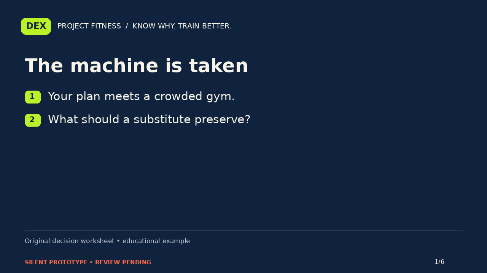
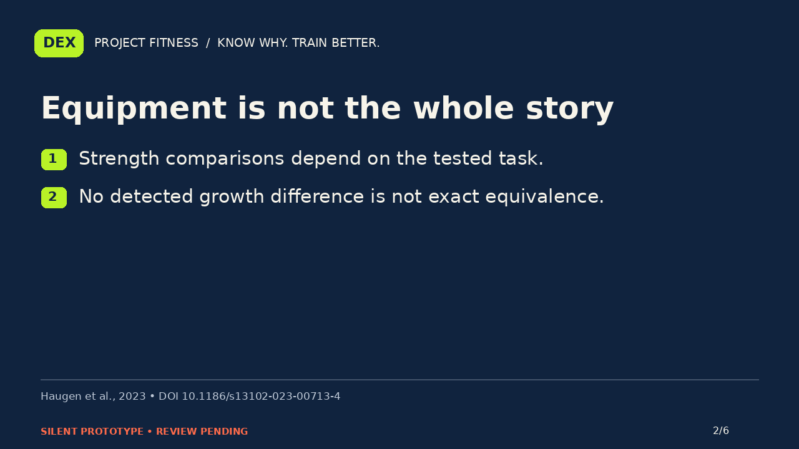
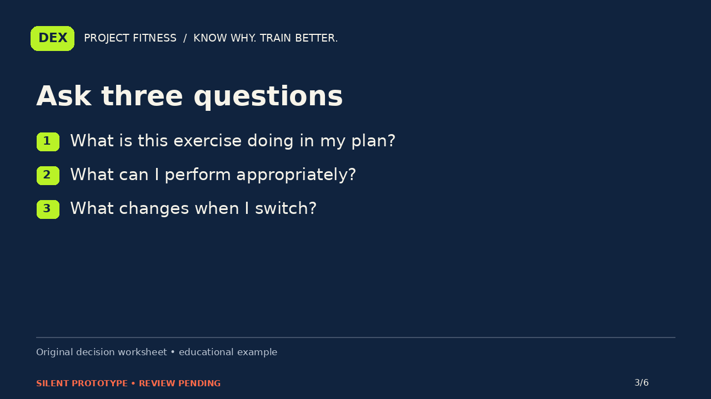
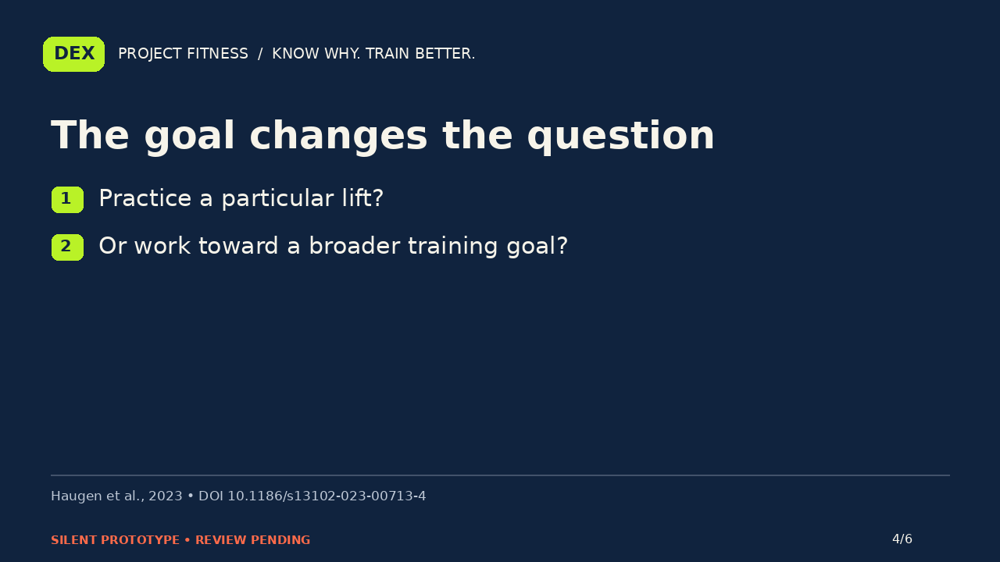
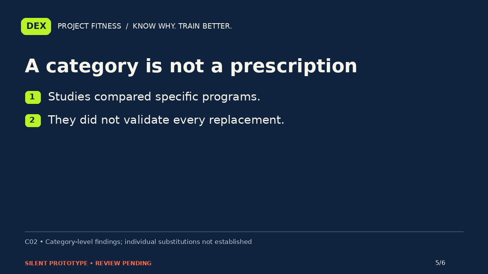
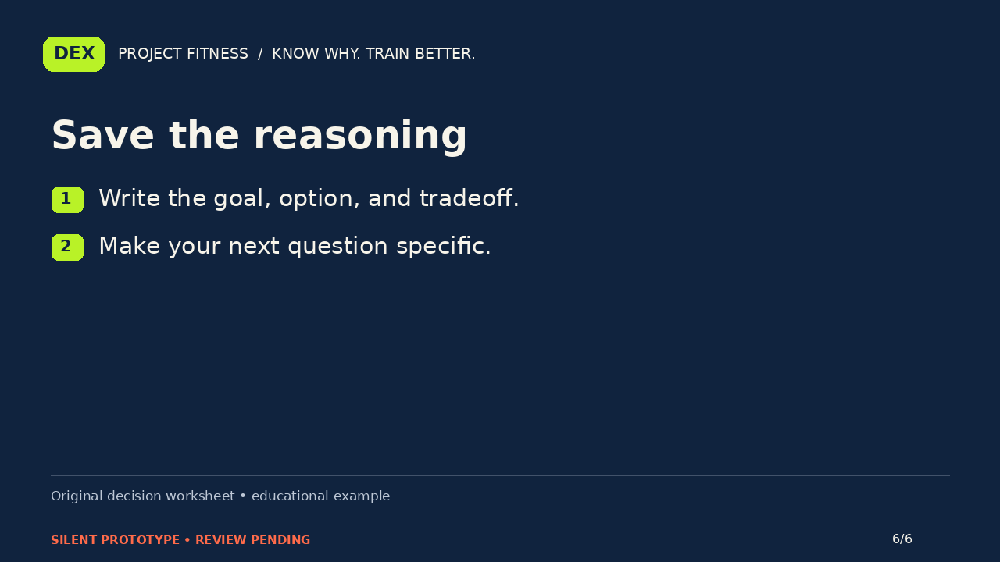

PROJECT FITNESS / P02-equipment / B
The machine is taken. What makes a useful substitute?
Silent storyboard prototype. Narration and editorial review are pending.
Narration script · Draft captions

Your next machine is occupied. Searching for the perfect replacement produces a dozen confident answers. Start with what you are trying to preserve. An exercise name, a muscle label, and a training goal are related, but they are not interchangeable instructions.

A review comparing free weights and machines found that strength changes depended in part on the task used to test them. It did not detect a difference in muscle growth in the available comparisons. That finding does not prove every individual exercise swap produces exactly the same result.

Ask three questions. What role does this exercise serve in the plan? Which available option can I perform appropriately? And what changes when I switch? Use the answers to discuss an adaptation. A matching muscle name alone is not enough to claim two exercises are identical.

If your goal involves performing a particular lift, practicing that task matters to the comparison. If your goal is broader, you may ask a different question. The point is to name the goal before treating an equipment swap as either perfect or useless.

Those studies compared particular programs and equipment. They did not validate every substitution in a crowded gym, or establish a personal injury-risk prediction. Do not use a broad category result to override pain, an unfamiliar technique, or the purpose of your existing program.

Use the substitution questions card to record the goal, the option, and the tradeoff you still need to resolve. A useful explanation should make the next decision clearer. It should not manufacture certainty that the evidence cannot provide. Know why. Train better.